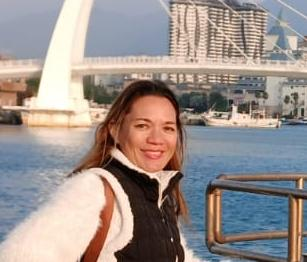

Secrétaire Générale du CERI • Ingénieur Etudes, Conception et Suivi de Travaux _ Eau Potable, Assainissement, Environnement
Contact : taiana.luth@gmail.com
De formation généraliste en hydraulique / process / réseaux AEP-EU, Taiana Luth œuvre depuis 20 ans en bureau d’études sur des missions de maîtrise d’œuvre complète (conception et travaux) de projets et taille divers (locaux techniques, postes de refoulement, pose de réseaux, station de traitement, etc), allant de la définition du besoin du maître d’ouvrage à l’élaboration des cahiers des charges, accompagnement dans les démarches de demandes de financement, et au suivi des travaux. Disposant d’une bonne maîtrise des marchés publics et des aspects techniques, Taiana Luth opère également sur les aspects financiers et administratifs des projets.
Coordination
Etudes d’aménagement
Etudes générales
Suivi de travaux